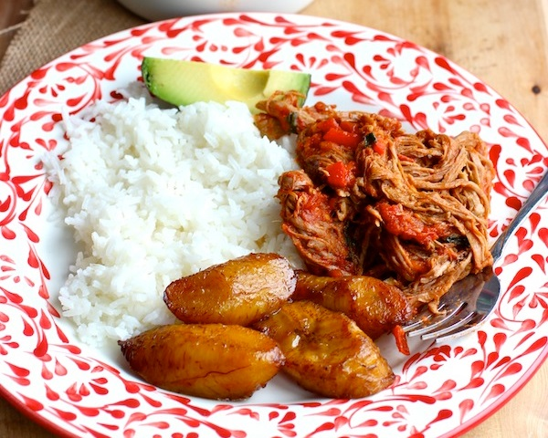

Gastronomia Colombiana
Sabor de Mi tierra
Favoritos
Historial
Carne Desmechada o Ropa Vieja
08/03/2020

Cocinar el corte de carne sobrebarriga de este modo es ideal cuando se quiere preparar un plato el día anterior. Carne Desmechada o Ropa Vieja es otra receta muy popular en Colombia y es deliciosa.
La comida mas rica es la de mi tierra cartagena, el pezcado es saludable y tiene variedad de sabores.
digo lo mismo que Vives, La comida mas rica es la de mi tierra costeña, con un super sancocho de pezcado la seguimos hasta el amanecer....jajajaja!!!. El pezcado es saludable y tiene variedad de sabores.
deliiii....sabores de mi tierrita con arepitas de Medellin.
Empanadas
08/03/2020

En Colombia, las empanadas también se venden fuera de las iglesias, pero estas por lo general son más pequeñas y sólo tienen relleno de papa , una gran alternativa para los vegetarianos y absolutamente deliciosas.
Pero la comida mas deliciosa incluyen esas epanadas, son de mi tierra, Medallo, donde la comida tiene variedad de sabores y colores.